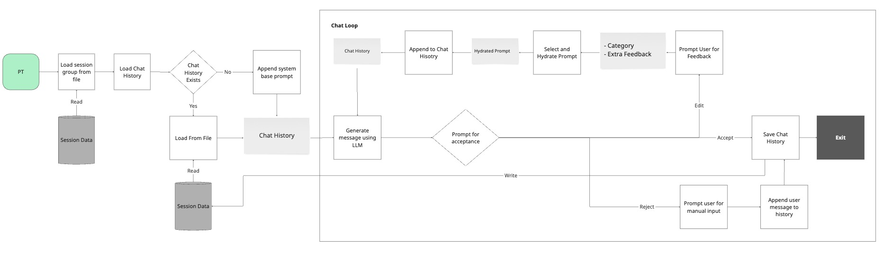
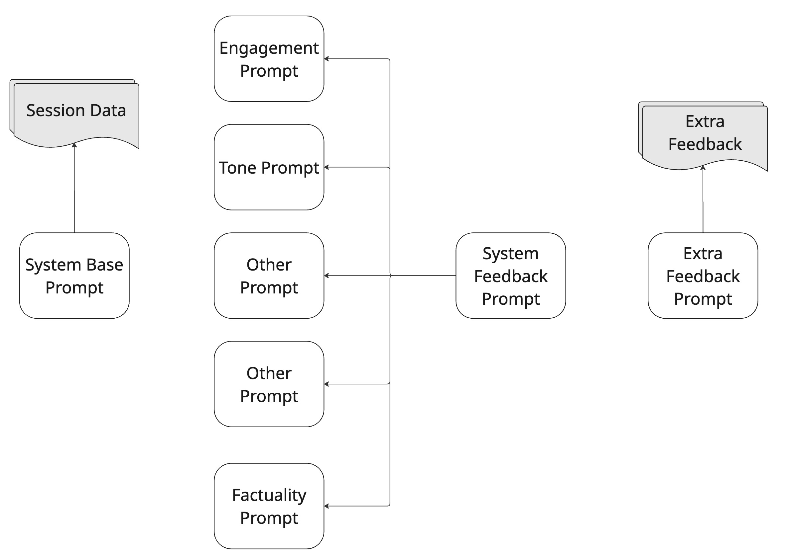
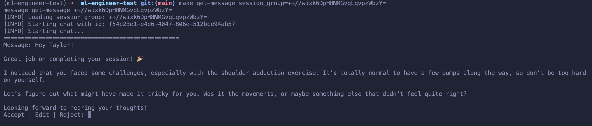
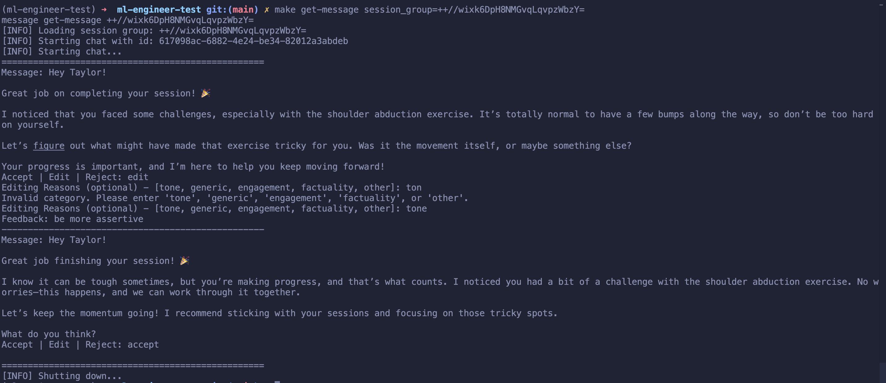
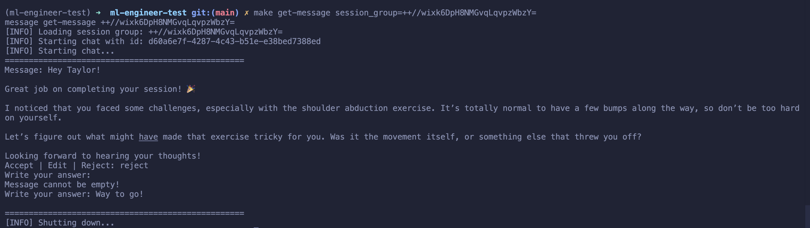
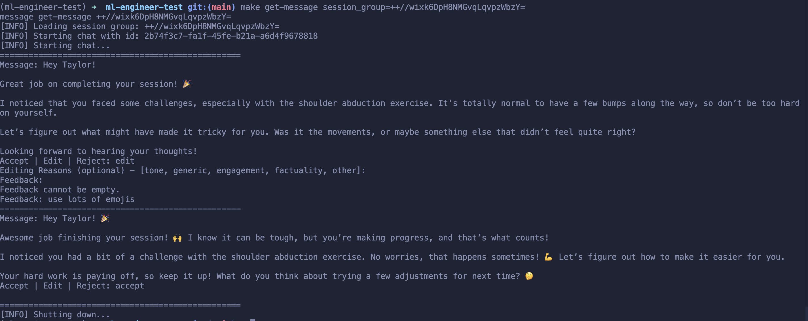
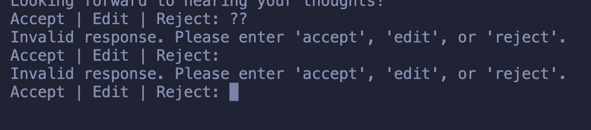

Question 2a
Physical Therapy Chat Application Analysis
This application is designed to help Physical Therapists (PTs) communicate with patients through a chat interface. The system enables therapists to review auto-generated follow-up messages, edit them with specific feedback categories, and maintain chat history across sessions.
Component Breakdown
1. chat.py
The main module containing all functionality: - Chat session management - Message generation via LLM (GPT-4o-mini) - Feedback collection and message refinement - Message acceptance/rejection flow
Code components:
- FeedbackOption enum: Categories for feedback (tone, generic, engagement, factuality, other)
- prompt_for_acceptance(): CLI interface for message review
- prompt_for_edit_feedback(): CLI interface for feedback collection
- llm(): Interface to the chat model
- run_chat(): Main chat loop that orchestrates the entire flow
2. io.py
Handles file I/O operations:
- load_prompts(): Loads system prompts from YAML (prompts/prompts.yml)
- load_chat_history(): Loads chat history from JSONL file. File are identified by UUID
- save_chat_history(): Persists conversation to JSONL file. File are identified by UUID
3. main.py
Entry point with CLI commands (provided):
- get_message(): Initiates chat session with specified group
4. Makefile
The Makefile target was modified to accept a session group identifier:
.PHONY: get-message
get-message:
message get-message $(session_group)
Usage: make get-message session_group=<session_group>
Workflow Breakdown
The application can be thought as a state machine, with distinct states: (generate → review → accept/edit/reject)
- Initialization Process:
- User invokes
make get-message session_group=<session_group>(callsmain.py) - Main calls
run_chat()inchat.py run_chat()loads session features, prompts, and chat history-
System initializes chat with base prompt (if chat history is empty) + session data
-
Message Generation Process:
- Chat history sent to
llm()function - LLM generates message based on history
-
Message displayed to therapist for review
-
Feedback Loop:
- If message edited, feedback added to history
- New message generated incorporating feedback
-
Process repeats until message accepted or rejected
-
Persistence Mechanism:
- At end of session,
save_chat_history()writes to disk - Each new session loads previous history for context

Prompts Relationships
There are 2 prompt archetypes:
- SYSTEM_BASE: The base prompt that is used to generate the message
- SYSTEM_FEEDBACK: The feedback prompt that is used to generate the feedback
The SYSTEM_BASE prompt is used to generate the initial message, and the SYSTEM_FEEDBACK prompt is used to generate the feedback.
The SYSTEM_FEEDBACK prompt is used to generate the feedback. It depends on the various feedback categories.

Code Analysis
chat.py
This is the core module handling the chat functionality:
Imports and Setup:
- Uses StrEnum to define feedback categories
- Imports I/O functions (load_chat_history, load_prompts, save_chat_history)
- Creates a unique UUID for each chat session
- Loads system configuration with get_settings()
- Instantiates the chat model with ChatModel()
Feedback System:
- FeedbackOption enum defines 5 categories: tone, generic, engagement, factuality, other
- FEEDBACK_PROMPT_MAP dictionary maps each category to specific prompt templates
- These prompts guide the LLM in improving messages based on therapist feedback
User Interaction Functions:
- prompt_for_acceptance(): Simple CLI input loop that forces user to choose accept, edit, or reject
- Validation: user must choose one of the options, otherwise the loop will continue
- prompt_for_feedback(): Two-step input collection for feedback category and specific comments
- If no category is provided, the default is other
- If an invalid category is provided, the loop will continue
- Text feedback is only requested if a category is provided (can be empty, defaults to other)
- If no comments are provided, the loop will continue
- Both functions include input validation to ensure proper data capture
LLM Interface:
- llm() function wraps the model interface
- Sets temperature to 0 (for more deterministic outputs)
- Uses gpt-4o-mini model
- Passes the entire message history to maintain context
Main Chat Loop (run_chat):
- Loads session data with get_features(session_group=session_group)
- Loads chat history with load_chat_history(chat_id=chat_id)
- Creates new chat file if it does not exist
- Initializes chat history with system prompt if empty
- Enters main loop where:
- Message is generated with LLM
- Therapist reviews and decides action
- For accept: adds message to history
- For edit: collects feedback, adds system instruction + feedback to history, and restarts loop (i.e. generates new message and goes back to therapist review)
- For reject: therapist writes their own message and adds it to history
- Saves chat history at end of session
- Includes exception handling to ensure history is saved even on error (graceful shutdown)
Potential Improvements
There are numerous potential improvements that could be made to the application, some include: - Error handling captures all exceptions the same way - The temporary/edited messages remain in chat history permanently. Alternatively, only the final message could be saved. - Chat history is saved synchronously, which could be optimized by using a background task. - All chat history is used in the LLM prompt, which could be optimized by using a smaller subset of the history. - Chat history could be incrementally saved.
io.py
This module handles all file operations:
Prompt Loading:
- load_prompts() reads YAML file from prompts/prompts.yml
- Returns dictionary of prompt templates for system and feedback messages
Chat History Management:
- load_chat_history(): Creates .chats directory if needed, reads JSONL file for chat ID
- Returns empty list for new chats, or list of message dictionaries for existing chats
- Messages stored as JSON objects, one per line
History Saving:
- save_chat_history(): Writes messages to JSONL file
- Function is async but doesn't use async file operations internally
- Overwrites entire file on each save (potential optimization point)
File Structure:
- Chat histories stored at .chats/{chat_id}.jsonl
- Prompts stored at prompts/prompts.yml
main.py
The entry point for the application:
Command Structure:
- Uses Typer for CLI interface
- get_message() function wraps the chat functionality
- Takes "session_group" parameter to identify which patient/session data to load
- Uses asyncio to run the async chat function
Execution Flow:
- Calls run_chat() function from chat.py
Prompts
The system is configured with several prompt templates. Prompts are loaded from prompts/prompts.yml.
Base System Prompt: - Defines the assistant's role as a physical therapist assistant - Explains importance of chat interactions in remote therapy - Details goals of acknowledging session completion, reinforcing communication, and keeping patients engaged - Provides guidelines and examples for different session outcomes
Feedback System Prompt: - Template for improving messages - Incorporates feedback category and specific comments
Category-Specific Prompts:
- TONE_PROMPT: Focus on conversational language
- GENERIC_PROMPT: Ensures proper message structure
- ENGAGEMENT_PROMPT: Emphasizes patient engagement
- FACTUALITY_PROMPT: Ensures accuracy based on session data
- OTHER_PROMPT: Catch-all for specific suggestions
Interaction Examples
In this section, we will go through a few examples of chat interactions. We use the same session group ++//wixk6DpH8NMGvqLqvpzWbzY= for all examples.
Initial Prompt - Startup
In this example we run the chat with session group ++//wixk6DpH8NMGvqLqvpzWbzY=:
make get-message session_group=++//wixk6DpH8NMGvqLqvpzWbzY=
The chat will start with the base prompt and the session data.

Handling Edits
This example shows how the chat handles edits with feedback. It purposly show how it handles a bad edit.
- The app starts a new chat session with the base prompt and session data.
- The LLM generates a message, which is displayed to the therapist.
- The therapist reviews the message and decides to edit it.
- The therapist misspell the word
toneaston. - The app prompts for the category again.
- The therapist selects
tone. - The app prompts for the feedback.
- The therapist provides feedback.
- The app prompts for the acceptance.
- The therapist accepts the message.
- The app saves the chat history (implicit).

Handling Rejections
This example shows how the chat handles rejections. We purposly provide an empty feedback to show how the app handles it.
- The app starts a new chat session with the base prompt and session data.
- The LLM generates a message, which is displayed to the therapist.
- The therapist reviews the message and decides to reject it.
- The app prompts for an answer.
- The therapist provides empty feedback.
- The app prompts for an answer again.
- The therapist provides an answer.
- The app saves the chat history (implicit).

Hanling Empty Category
This example shows how the chat handles empty category inputs.
- The app starts a new chat session with the base prompt and session data.
- The LLM generates a message, which is displayed to the therapist.
- The therapist reviews the message and decides to edit it.
- The app prompts for the category.
- The therapist provides an empty category.
- The app defaults to
other. - The app prompts for the feedback.
- The therapist provides empty feedback.
- The app prompts for feedback again.
- The therapist provides feedback, asking for more emojis.
- The app generates a new message.
- The app prompts for the acceptance.
- The therapist accepts the message.
- The app saves the chat history (implicit).

Handling Action Errors
This example shows how the chat handles wrong action inputs The user inputs invalid and empty inputs.

Enhancement Opportunities
Asynchronous I/O Optimization
Issues:
- File operations block the main execution thread
- save_chat_history() is async but doesn't leverage asynchronous file I/O
Recommendations:
- Implement true asynchronous file operations with aiofiles
- Add background saving to prevent UI lag
import aiofiles
async def save_chat_history(chat_id, chat_history):
"""Save chat history asynchronously without blocking."""
chat_file = os.path.join(".chats", f"{chat_id}.jsonl")
async with aiofiles.open(chat_file, "w") as f:
for message in chat_history:
await f.write(json.dumps(message) + "\n")
Error Handling & Recovery
Issues: - Basic exception handling exists but lacks granularity - No recovery mechanism for interrupted sessions
Solution: - Implement specific exception handlers for different error types - Add session recovery mechanism
async def run_chat(session_group):
try:
# Existing code...
except FileNotFoundError:
print("[ERROR] Session data not found. Creating new session.")
# Recovery logic
except NetworkError:
print("[ERROR] Connection to LLM service failed.")
# Retry logic
except Exception as e:
# General fallback
Testing & Evaluation Framework
Issues: - No testing infrastructure - No metrics for message quality
Solution: - Add unit tests for each component - Implement evaluation metrics for message quality (LLM as a Judge, interaction examples, etc.)
Other Improvements
- Enhanced Feedback Collection
- Model Choice Flexibility
- Load from previous chat session
- User Experience
- Extend application state graph and prompts for enhanced personalization
Implementation Priorities
Given the current state of the application and the outlined recommendations, the following are the implementation priorities, which can have the highest impact with the least effort:
- Unit tests
- Enhanced error handling
- Asynchronous file I/O with aiofiles
- User experience improvements